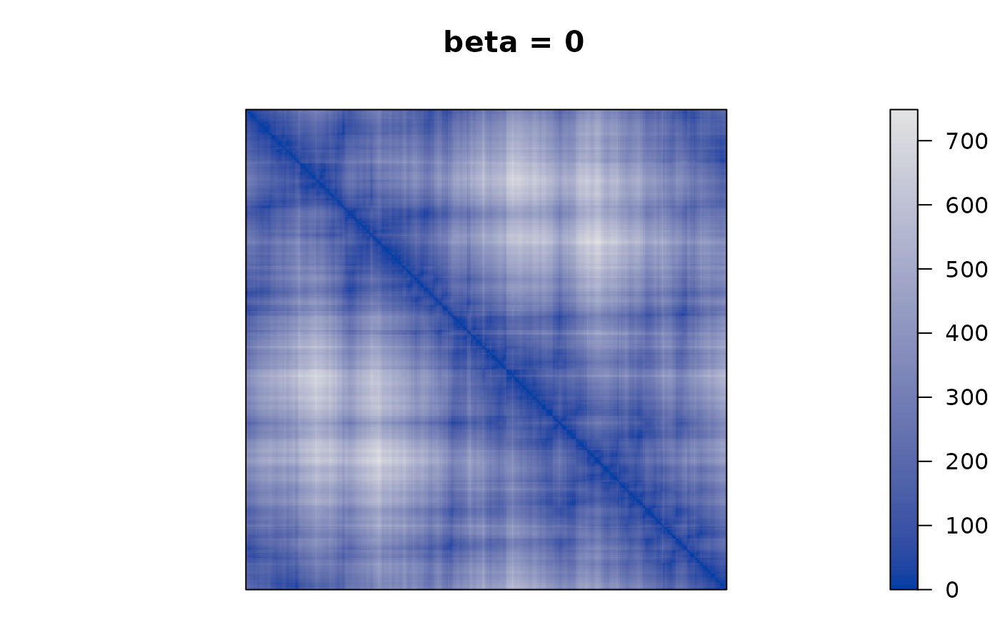
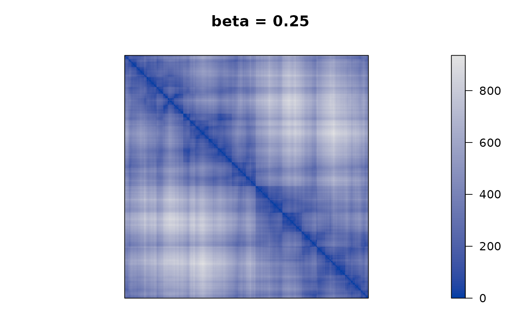
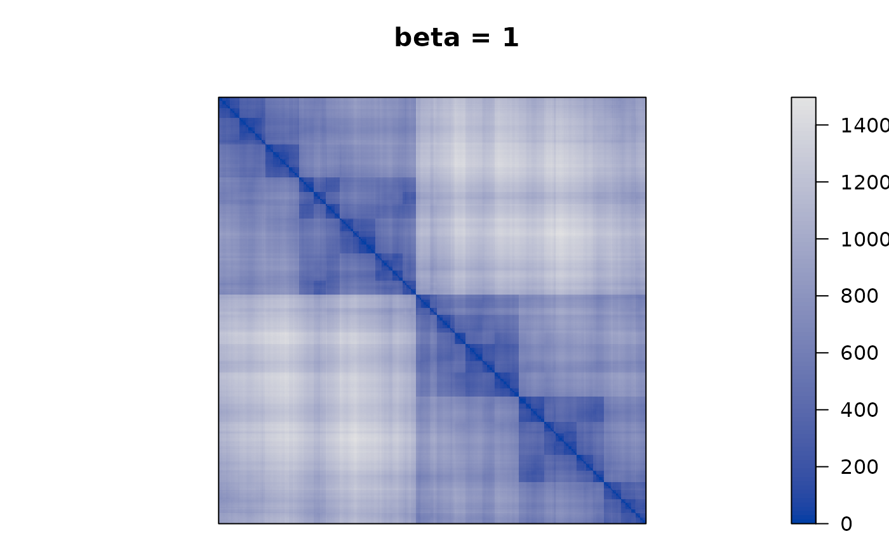
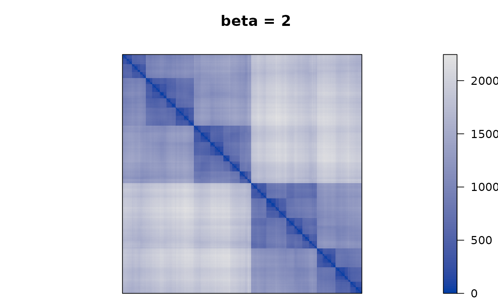
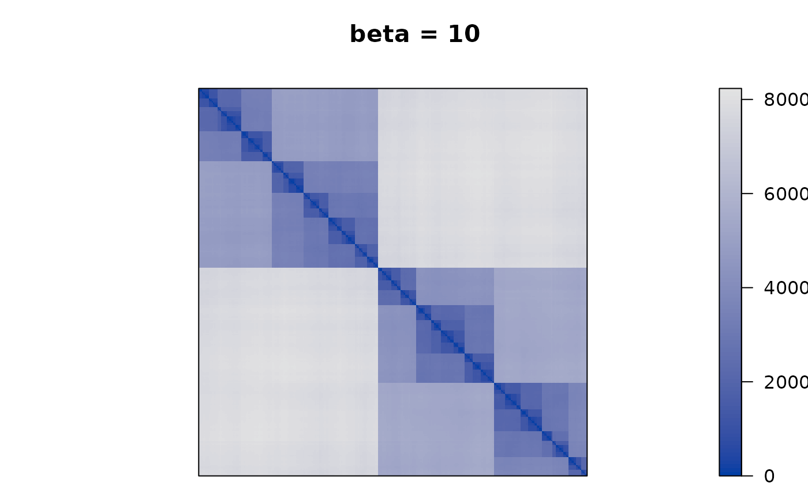

How to use Tree-Penalized Path Length Criterion with Package seriation
Michael Hahsler
Source:vignettes/tpPL.Rmd
tpPL.RmdIntroduction
The tree-penalized path length criterion was introduced in
Denis A. Aliyev, Craig L. Zirbel, Seriation using tree-penalized path length, European Journal of Operational Research, Volume 305, Issue 2, 2023, Pages 617-629
This short vignette shows how to use the tree-penalized path length
criterion seriation with the R package seriation.
The idea of the tree-penalized path length criterion is to apply TSP-based seriation to a modified distance matrix that incorporates clustering structure into the distance information. This is achieved by using the modified distance matrix:
where contains the cophenetic distances for a hierarchical clustering. By adjusting , the seriation can move seamlessly from a TSP based only on distances () to a seriation order that represents purely the clustering structure ().
Numeric Example
We use a sample of the Chameleon data set 7 which comes with the seriation package and has a cluster structure.
library("seriation")
data("Chameleon")
x <- chameleon_ds7[sample(1:nrow(chameleon_ds7), 500), ]
plot(x)We calculate the penalty matrix from complete-link hierarchical clustering. The penalties are the cophenetic distances in the dendrogram.
P <- cophenetic(hc)Next, we calculate the penalized distance matrix, perform seriation and calculate the tree-penalized path length seriation criterion. The seriation criterion can be calculated using the path length criterion on the modified distance matrix .
## Path_length
## 28689.18Finally, we perform TSP seriation using different values for to see how the clustering structure emerges more and more in the seriation result.
betas <- c(0, .25, .5, 1, 2, 10)
for (beta in betas) {
F <- D + beta * P
pimage(F, order = "TSP", main = paste("beta =", beta))
}




We see that as is increased the seriation follows more and more the clustering. For approaching , the seriation order approaches optimal leaf ordering (OLO).